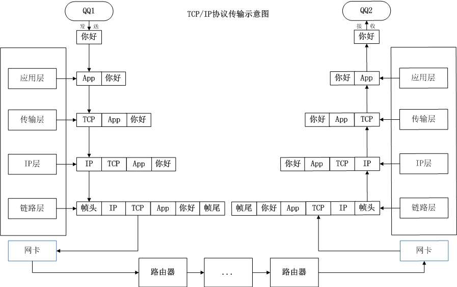

tcp/ip 协议
tcp-ip简介
作为新时代标杆的我们，已经离不开手机、离不开网络，对于互联网大家可能耳熟能详，但是计算机网络的出现比互联网要早很多
1. 什么是协议
有的说英语，有的说中文，有的说德语，说同一种语言的人可以交流，不同的语言之间就不行了
为了解决不同种族人之间的语言沟通障碍，现规定国际通用语言是英语，这就是一个规定，这就是协议
2. 计算机网络沟通用什么
现在的生活中，不同的计算机只需要能够联网（有线无线都可以）那么就可以相互进行传递数据

那么不同种类之间的计算机到底是怎么进行数据传递的呢？
就像说不同语言的人沟通一样，只要有一种大家都认可都遵守的协议即可，那么这个计算机都遵守的网络通信协议叫做TCP/IP协议
3. TCP/IP协议(族)
早期的计算机网络，都是由各厂商自己规定一套协议，IBM、Apple和Microsoft都有各自的网络协议，互不兼容
为了把全世界的所有不同类型的计算机都连接起来，就必须规定一套全球通用的协议，为了实现互联网这个目标，互联网协议族（Internet Protocol Suite）就是通用协议标准。
因为互联网协议包含了上百种协议标准，但是最重要的两个协议是TCP和IP协议，所以，大家把互联网的协议简称TCP/IP协议(族)
常用的网络协议如下图所示：


说明：
网际层也称为：网络层
网络接口层也称为：链路层
另外一套标准